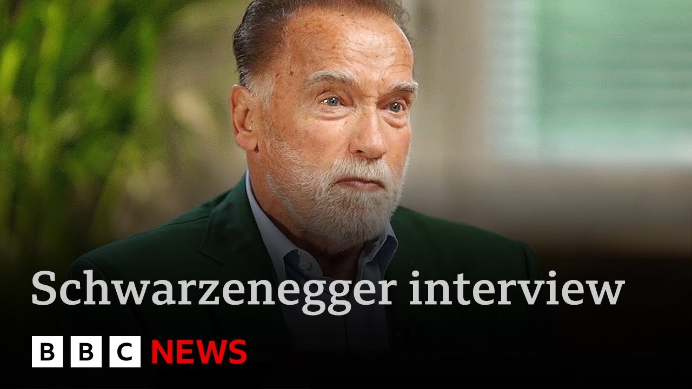

【阿诺德·施瓦辛格表示对特朗普的气候政策“停止抱怨”并“采取行动” | BBC新闻】
Summary: Arnold Schwarzenegger urges people to stop complaining about Trump's climate policies and focus on local and state-level action instead.
摘要： 阿诺德·施瓦辛格敦促人们停止抱怨特朗普的气候政策，转而关注地方和州层面的行动。

⏱️ Estimated Reading Time: 3 min
📚 六级生词 📚 雅思生词 📚 托福生词 📚 GRE生词 📚 视频里的生词
The actor and former governor of California, Arnold Schwarzenegger, has told the BBC that people should stop whining about President Trump's approach to climate change.
演员兼加州前州长阿诺德·施瓦辛格告诉BBC，人们应该停止对特朗普总统的气候变化应对方式抱怨。
Speaking to Laura Kunberg in Vienna, Mr. Schwarzenegger says he doesn't believe the White House can stop the changes that are required.
施瓦辛格在维也纳接受劳拉·昆伯格采访时表示，他不相信白宫能阻止必要的变革。
Ladies and gentlemen, Arnold Schwarzenegger.
女士们先生们，阿诺德·施瓦辛格。
Arie doesn't do anything by halves.
阿诺做事从不半途而废。
Not just lifting weights, but blitzing the competition.
不仅是举重，还要横扫赛场。
Not just acting, but movies making billions at the box office.
不仅是演戏，还要拍出票房数十亿的电影。
And as a campaigner, never taking no for an answer.
作为活动家，从不接受拒绝。
After decades of environmental activism, he has a blunt message for those bemoaning the attitude of Donald Trump.
经过数十年的环保行动，他对那些抱怨特朗普态度的人直言不讳。
He's reversed many green measures and pulled out of international agreements on climate change.
他推翻了许多环保措施，并退出了气候变化国际协议。
And I tell them, I said, "Hey, stop whining.
我告诉他们：“嘿，别抱怨了。
What do you do?"
你们做了什么？”
I said, "We all have a responsibility.
我说：“我们都有责任。
What do you think the action comes only for the whole world out of Washington the White House?
你们以为行动只能来自华盛顿白宫吗？
No.
不。
I said most of the action is happening on a local level and on the state level.
我说大部分行动发生在地方和州层面。
So people should just ignore Donald Trump then when he talks about the I wouldn't say I wouldn't say ignore it.
所以人们应该无视特朗普的话——不，我不会说无视。
I think you can be aware of it.
我认为你可以意识到它。
You have to be aware of your obstacles but you should not go and use them as an excuse is my point.
你必须意识到障碍，但你不应该把它们当作借口，这是我的观点。
You know you got to go all out.
你知道你必须全力以赴。
Do I have a vision?
我有愿景吗？
I mean, imagine that when I was 15 years old, my vision was to go to America and to be a bodybuilding champion and to get into acting and to do big movies, Hollywood movies.
我是说，想象一下，我15岁时的愿景是去美国，成为健美冠军，进入演艺圈，拍大片，好莱坞电影。
What do you think the the obstacles there were?
你觉得那时的障碍是什么？
Endless amount of obstacles and it was very difficult.
无尽的障碍，非常艰难。
It was a grind.
那是一场磨炼。
So, did I surrender?
那么，我放弃了吗？
Did I go in whine?
我抱怨了吗？
No.
没有。
I just said, "Okay, here are the obstacles.
我只是说：“好吧，这些是障碍。
This is what I have to overcome."
这是我必须克服的。”
And I made it.
而我做到了。
Schwarzenegger is no fan of Donald Trump, but he doesn't want his own environmental cause to stall because of shifting winds.
施瓦辛格不是特朗普的粉丝，但他不希望自己的环保事业因风向变化而停滞。
But hard times, including in the UK, have seen appetite to take action on the environment fade.
但艰难时期，包括在英国，人们对环保行动的积极性减弱了。
Laura Kinsburg, BBC News.
劳拉·金斯伯格，BBC新闻。